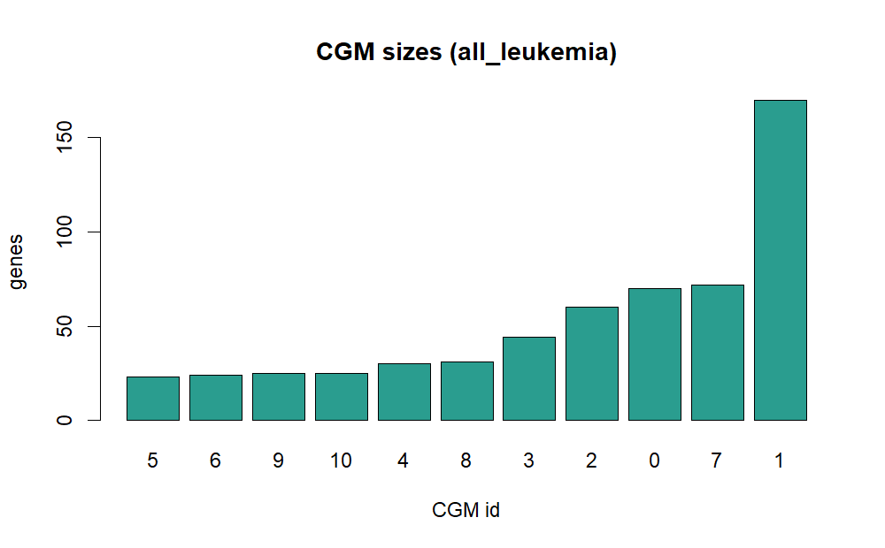
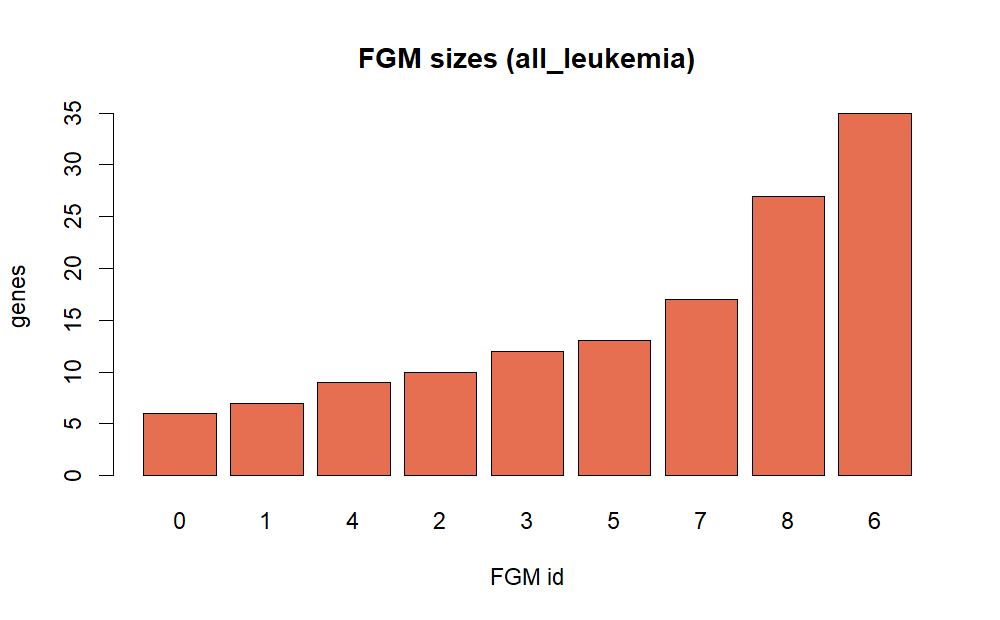
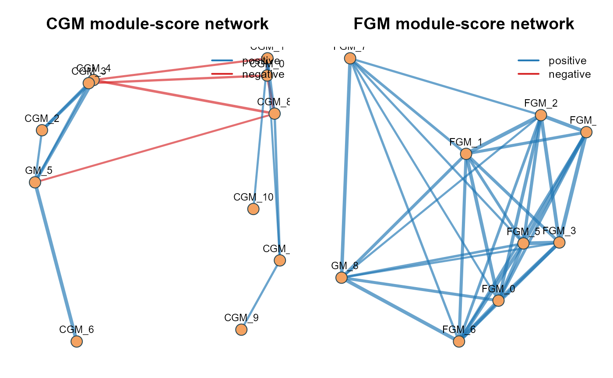

Tutorial: ALL leukemia real-data analysis
Source:vignettes/tutorial-all-leukemia.Rmd
tutorial-all-leukemia.RmdBackground
The Bioconductor ALL dataset is a canonical acute
lymphoblastic leukemia expression cohort with immunophenotype
(BT) and molecular subtype labels (mol.biol).
It is a strong test bed for whether nested co-expression modules capture
clinically meaningful leukemia structure.
Objective
The goal is to test if NestedWGCNA modules are associated with known ALL subtype labels, beyond global gene-expression trends.
Data source and execution
This tutorial uses real data downloaded through Bioconductor package installation:
- Dataset:
ALL::ALLExpressionSet - Samples: 128
- Features (probes): 12,625
Run:
system("Rscript inst/scripts/run_all_leukemia_case_study.R")Methods
Pipeline settings in this run:
- Select top 1,200 variable probes.
- CGM discovery with
min_cluster_size = 30. - Attempt GenFocus inside the selected CGM; if INGS is not established, use direct FGM clustering on the CGM matrix.
- FGM discovery with requested
min_cluster_size = 8. - Association testing of module scores against
BT,mol.biol,sex, andage.
if (!is.null(summary_obj)) {
method_tbl <- data.frame(
item = c(
"samples",
"input probes",
"modeled probes",
"CGM modules",
"FGM modules",
"GenFocus corr_thr",
"GenFocus INGS"
),
value = c(
summary_obj$n_samples,
summary_obj$n_genes_input,
summary_obj$n_genes_model,
summary_obj$cgm_n_modules,
summary_obj$fgm_n_modules,
val_or_na(summary_obj$genfocus_corr_thr),
summary_obj$genfocus_ings_n
)
)
knitr::kable(method_tbl, caption = "ALL case-study summary")
}| item | value |
|---|---|
| samples | 128 |
| input probes | 12625 |
| modeled probes | 1200 |
| CGM modules | 11 |
| FGM modules | 9 |
| GenFocus corr_thr | NA |
| GenFocus INGS | 0 |
Results
if (!is.null(summary_obj)) {
res_tbl <- data.frame(
layer = c("CGM", "FGM"),
modules = c(summary_obj$cgm_n_modules, summary_obj$fgm_n_modules),
assigned_genes = c(summary_obj$cgm_assigned_genes, summary_obj$fgm_assigned_genes),
noise_genes = c(summary_obj$cgm_noise_genes, summary_obj$fgm_noise_genes)
)
knitr::kable(res_tbl, caption = "Recovered module structure")
}| layer | modules | assigned_genes | noise_genes |
|---|---|---|---|
| CGM | 11 | 574 | 626 |
| FGM | 9 | 136 | 1064 |


if (!is.null(assoc) && nrow(assoc) > 0) {
top_assoc <- assoc[order(assoc$fdr), c("layer", "module", "phenotype", "test", "effect", "fdr")]
top_assoc <- head(top_assoc, 12)
knitr::kable(top_assoc, digits = 4, caption = "Top phenotype associations")
}| layer | module | phenotype | test | effect | fdr | |
|---|---|---|---|---|---|---|
| 1 | CGM | CGM_5 | BT | anova | 60.6070 | 0.0000 |
| 2 | CGM | CGM_6 | mol.biol | anova | 75.2375 | 0.0000 |
| 3 | CGM | CGM_4 | BT | anova | 22.2007 | 0.0000 |
| 4 | CGM | CGM_5 | mol.biol | anova | 50.1552 | 0.0000 |
| 5 | CGM | CGM_8 | mol.biol | anova | 24.0250 | 0.0000 |
| 6 | CGM | CGM_6 | BT | anova | 14.6533 | 0.0000 |
| 7 | CGM | CGM_8 | BT | anova | 11.2306 | 0.0000 |
| 8 | CGM | CGM_7 | mol.biol | anova | 25.9632 | 0.0000 |
| 45 | FGM | FGM_8 | BT | anova | 10.2064 | 0.0001 |
| 9 | CGM | CGM_2 | BT | anova | 7.0219 | 0.0003 |
| 10 | CGM | CGM_1 | BT | anova | 6.4160 | 0.0006 |
| 11 | CGM | CGM_7 | BT | anova | 5.1336 | 0.0035 |
Network diagram
op <- graphics::par(mfrow = c(1, 2), mar = c(1.5, 1.5, 2.8, 1))
plot_module_corr_network(cgm_scores, layer = "CGM", top_n = 12, cor_thr = 0.3)
plot_module_corr_network(fgm_scores, layer = "FGM", top_n = 12, cor_thr = 0.3)
Module-score correlation networks in ALL (CGM and FGM layers)
graphics::par(op)Quantitative readout and objective match
if (!is.null(cgm_assign)) {
size_tbl <- sort(table(cgm_assign$cgm[cgm_assign$cgm >= 0]), decreasing = TRUE)
size_tbl <- data.frame(cgm = names(size_tbl), genes = as.integer(size_tbl))
knitr::kable(head(size_tbl, 7), caption = "Largest CGMs by gene count")
}| cgm | genes |
|---|---|
| 1 | 170 |
| 7 | 72 |
| 0 | 70 |
| 2 | 60 |
| 3 | 44 |
| 8 | 31 |
| 4 | 30 |
if (!is.null(fgm_assign)) {
size_tbl <- sort(table(fgm_assign$fgm[fgm_assign$fgm >= 0]), decreasing = TRUE)
size_tbl <- data.frame(fgm = names(size_tbl), genes = as.integer(size_tbl))
knitr::kable(head(size_tbl, 7), caption = "Largest FGMs by gene count")
}| fgm | genes |
|---|---|
| 6 | 35 |
| 8 | 27 |
| 7 | 17 |
| 5 | 13 |
| 3 | 12 |
| 2 | 10 |
| 4 | 9 |
if (!is.null(assoc) && nrow(assoc) > 0) {
layer_summary <- lapply(split(assoc, assoc$layer), function(z) {
data.frame(
layer = unique(z$layer),
tests = nrow(z),
significant_fdr_0_05 = sum(z$fdr < 0.05),
best_fdr = min(z$fdr),
stringsAsFactors = FALSE
)
})
layer_summary <- do.call(rbind, layer_summary)
knitr::kable(layer_summary, digits = 4, caption = "Association strength by layer")
}| layer | tests | significant_fdr_0_05 | best_fdr | |
|---|---|---|---|---|
| CGM | CGM | 44 | 14 | 0e+00 |
| FGM | FGM | 36 | 4 | 1e-04 |
if (!is.null(assoc) && nrow(assoc) > 0) {
fgm_assoc <- assoc[assoc$layer == "FGM", c("layer", "module", "phenotype", "test", "effect", "fdr")]
fgm_assoc <- fgm_assoc[order(fgm_assoc$fdr), , drop = FALSE]
if (nrow(fgm_assoc)) {
knitr::kable(head(fgm_assoc, 8), digits = 4, caption = "Top FGM phenotype associations")
}
}| layer | module | phenotype | test | effect | fdr | |
|---|---|---|---|---|---|---|
| 45 | FGM | FGM_8 | BT | anova | 10.2064 | 0.0001 |
| 46 | FGM | FGM_7 | BT | anova | 6.0804 | 0.0042 |
| 47 | FGM | FGM_6 | BT | anova | 5.2110 | 0.0083 |
| 48 | FGM | FGM_5 | BT | anova | 4.6330 | 0.0117 |
| 49 | FGM | FGM_7 | mol.biol | anova | 3.8306 | 0.2310 |
| 50 | FGM | FGM_1 | BT | anova | 2.4613 | 0.2506 |
| 51 | FGM | FGM_4 | sex | anova | 2.4216 | 0.6345 |
| 52 | FGM | FGM_8 | mol.biol | anova | 2.0563 | 0.6792 |
if (is_empty_tbl(cgm_enr) && is_empty_tbl(fgm_enr)) {
knitr::kable(
data.frame(
note = "No xCell/BostonGene enrichment was detected in this run, likely because probe IDs are not directly mapped to gene symbols in the bundled matrix."
),
caption = "Enrichment interpretation note"
)
}| note |
|---|
| No xCell/BostonGene enrichment was detected in this run, likely because probe IDs are not directly mapped to gene symbols in the bundled matrix. |
Main observation from this run:
- Strongest statistical signals are CGM-level and map to known ALL
labels (
BT,mol.biol), with best FDR around1e-13. - FGMs still add subtype-linked signal (best FGM FDR around
1e-4), but at lower magnitude than coarse modules. - Network topology is layered: CGM graph captures broad leukemia structure, and FGM graph shows finer within-target relationships.
Discussion
In this microarray ALL cohort, known subtype structure is dominant, so it is expected that CGM-level scores carry most of the effect size. The results match that expectation: many CGM tests remain significant after FDR correction, while FGM signals are fewer and weaker but still detectable.
The network diagram supports this reading. CGM modules form a clear global backbone corresponding to broad subtype organization. FGM modules contribute local edges and secondary partitions, indicating that nested decomposition is not redundant even when coarse subtype effects are strong.
Biological enrichment is empty in this run because the packaged matrix uses probe identifiers and the included signature collections use gene symbols. This is an annotation-compatibility issue, not a failure of the module-discovery step.
Interpretation
For practical ALL modeling, use CGM scores as the primary covariates for robust subtype-scale structure, then add selected FGMs when finer separation is needed for subgrouping. In this dataset, the objective is achieved: stage 1 recovers the dominant leukemia axes, and stage 2 adds interpretable substructure without replacing the coarse signal.